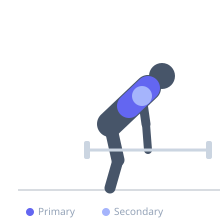
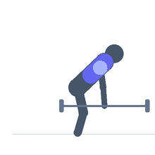

Exercise guide / Bent-Over Row with Snatch Grip
Bent-Over Row with Snatch Grip
The snatch-grip bent-over row uses an extra-wide grip (wider than the standard clean-grip row) that places the shoulder blades at maximum abduction at the bottom of the movement, allowing greater scapular excursion and therefore a fuller contraction of the middle and lower trapezius on each rep. The wide grip also reduces elbow flexion range, shifting more emphasis to the rhomboids and trapezius relative to the biceps.
Primary muscles
trapezius middle
rhomboid major
Secondary muscles
latissimus dorsi
deltoid posterior
Stabilizers
erector spinae
Equipment
No Equipment (Bodyweight)


Starting position
- Stand with feet hip-width apart. Grip the barbell in a snatch-width grip (roughly 1.5 times shoulder width, or use the bar's snatch-grip markings). Hinge to 45-70 degrees, arms extended.
Setup
- The snatch grip on most bars places the hands just inside or at the outer knurling rings. Use straps if grip limits training volume.
Steps
- Step 1: Begin hinged with the wide-grip barbell hanging.
- Step 2: Row the bar toward the lower abdomen, driving the elbows out wide.
- Step 3: At peak, hold 1 second with shoulder blades fully retracted.
- Step 4: Lower under control — feel the shoulder blades protract fully at the bottom.
- Step 5: Repeat.
Coaching cues
- Wide grip, wide elbows
- Think 'shoulder blades apart at the bottom, together at the top'
- Upright chest at peak — do not round
Breathing
- Exhale on the row. Inhale returning.
Range of motion
- Full scapular protraction at bottom to full retraction at top.
Tempo
- 2-1-2-0
Common mistakes
- Elbows tracking close to the body — the wide grip requires wide elbow tracking
- Using a narrower grip than true snatch width — the wide grip is what differentiates this variation
Safety
- The snatch grip puts the wrists in greater extension — assess wrist mobility before loading
- Moderate loads; this is a technique and upper-back variation, not a max-load lift
Training
- hypertrophy: 8–15 reps
- hypertrophy: 3–4 sets
- Rest: {'hypertrophy': 90}